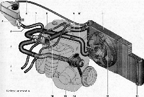

Система охлажденияОсновные данные для контроля, регулировки и обслуживания
Моменты затяжки резьбовых соединений
 Система охлаждения: 1 — шланг отвода охлаждающей жидкости из радиатора отопителя; 2 — шланг подвода охлаждающей жидкости к радиатору отопителя; 3 — шланг подводящей трубы насоса охлаждающей жидкости; 4 — шланг расширительного бачка; 5 — расширительный бачок; 6 — пароотводящий шланг радиатора двигателя; 7 — термостат; 8 — шланг подвода жидкости к дроссельному узлу; 9 — шланг подвода жидкости к радиатору двигателя; 10 — шланг отвода жидкости из радиатора двигателя; 11 — радиатор двигателя; 12 — пробка сливного отверстия радиатора; 13 — электровентилятор радиатора; 14 — насос охлаждающей жидкости; 15 — подводяшая труба насоса охлаждающей жидкости; 16 — шланг отвода охлаждающей жидкости из дроссельного узла Система охлаждения двигателя — жидкостная, закрытого типа с принудительной циркуляцией охлаждающей жидкости и расширительным бачком. В системе охлаждения двигателя используются специальные жидкости на основе смеси воды с этиленгликолем. У них пониженная температура замерзания и высокая температура кипения. Кроме того, благодаря комплексу добавляемых присадок, охлаждающая жидкость препятствует коррозии стенок каналов, не вспенивается, продлевает срок службы сальника насоса охлаждающей жидкости. Циркуляцию жидкости в системе обеспечивает центробежный насос? установленный в блоке цилиндров. Привод насоса осуществляется зубчатым ремнем привода ГРМ. Система охлаждения состоит из двух так называемых кругов циркуляции. Малый круг не включает в себя радиатор двигателя, и жидкость омывает только блок цилиндров и головку блока цилиндров, а также протекает через канал дроссельного узла и радиатор отопителя. Радиатор отопителя встроен в систему охлаждения двигателя и предназначен для обогрева салона за счет циркуляции через него горячей охлаждающей жидкости. При движении по большому кругу охлаждающая жидкость проходит через радиатор двигателя, где охлаждается набегающим потоком воздуха. Управляет направлением потока жидкости в системе охлаждения двигателя термостат. В нем установлены два клапана — основной и перепускной (дополнительный). Основной клапан управляет циркуляцией жидкости по большому кругу, а перепускной — по малому. Клапаны связаны между собой: когда один открывается, второй закрывается, и наоборот. Па холодном двигателе перепускной (дополнительный) клапан термостата открыт, и жидкость циркулирует только по малому кругу. При температуре около 87 °С основной клапан термостата начинает открываться, а перепускной — закрываться, и некоторое время жидкость циркулирует по малому и большому кругам одновременно. При температуре 102 °С основной клапан термостата открыт полностью, а перепускной закрыт, и весь поток жидкости проходит через радиатор двигателя. При недостаточно интенсивном воздушном потоке охлаждение радиатора производится электровентилятором. Он установлен за радиатором двигателя и включается по сигналу электронного блока управления двигателем. В цепь питания электродвигателя вентилятора встроен дополнительный резистор. Особенности устройства, технического обслуживания и ремонта двигателя 1,6i описаны в главе «Особенности устройства и ремонта модификаций автомобиля LADA KALINA*. Шатун и его крышку сначала изготовляют как единую (неразъемную) деталь. После выполнения отверстий в верхней и нижней головках шатуна, специальным методом «раскалывают» нижнюю головку. Эта технология позволяет получить идеальное соединение крышки с шатуном. Для компенсации теплового расширения жидкости в системе охлаждения установлен расширительный бачок. В пробке бачка размещены впускной и выпускной предохранительные клапаны, что позволяет поддерживать оптимальное давление в системе при нагреве жидкости, а также компенсировать разрежение при ее остывании. |